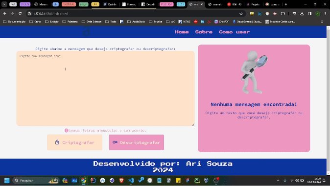
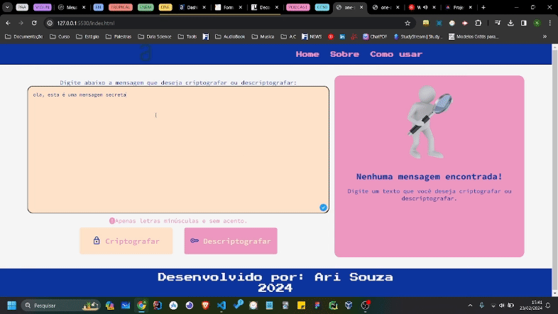

Vídeo Explicativo
No vídeo abaixo, você poderá aprender como usar o sistema para encriptografar e descriptografar mensagens.
Guia
Aqui está um guia escrito passo-a-passo sobre como usar o sistema:
- Passo I: Na página Home você pode digitar a mensagem que deseja criptografar ou descriptografar no campo como mostra abaixo: 
- Passo II: Se sua mensagem esta descriptografada, você deverá clicar no botão para criptografar 
Importante: Para descriptografar uma mensagem basta colar a mensagem no campo de texto e clicar no botão de descriptografar.